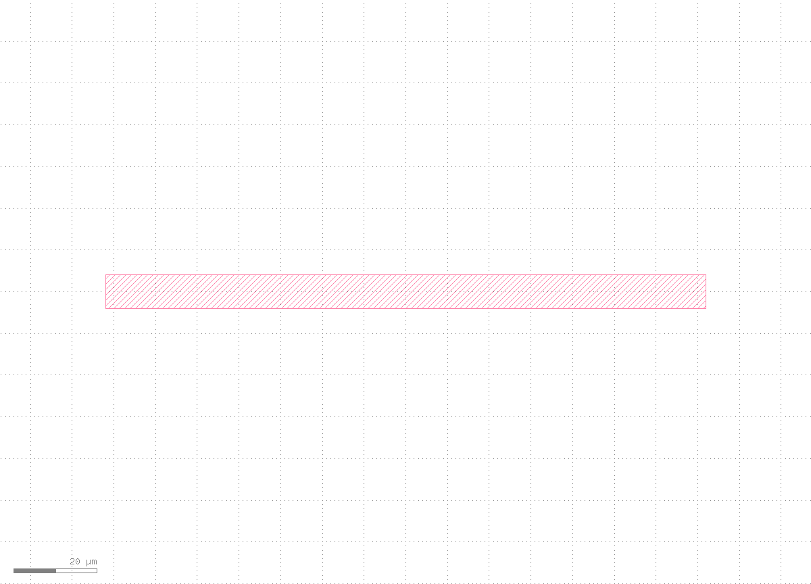
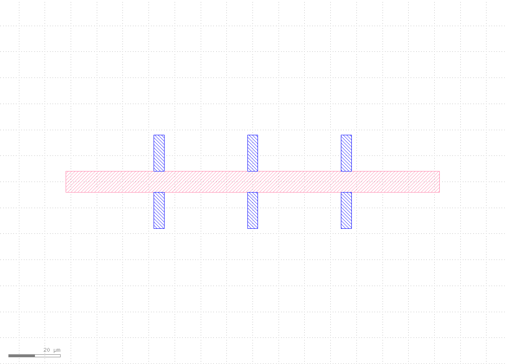
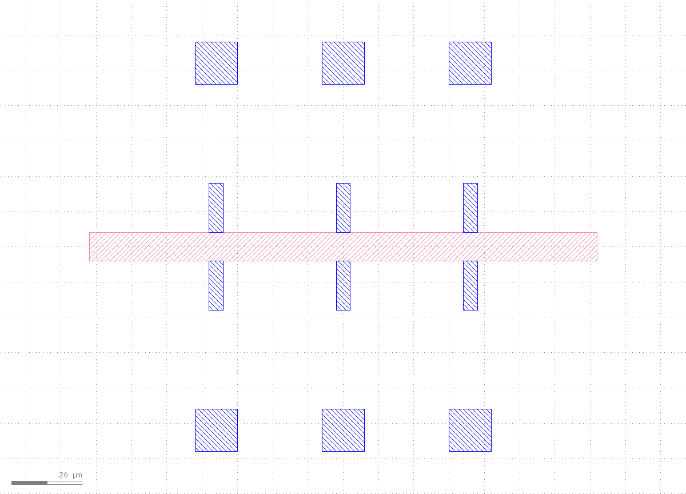
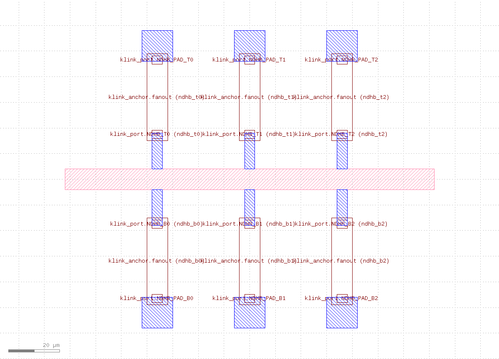
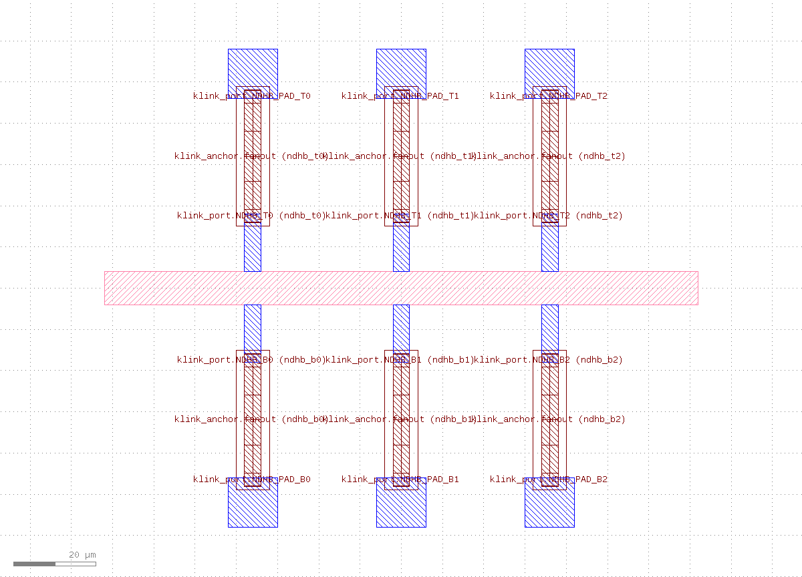
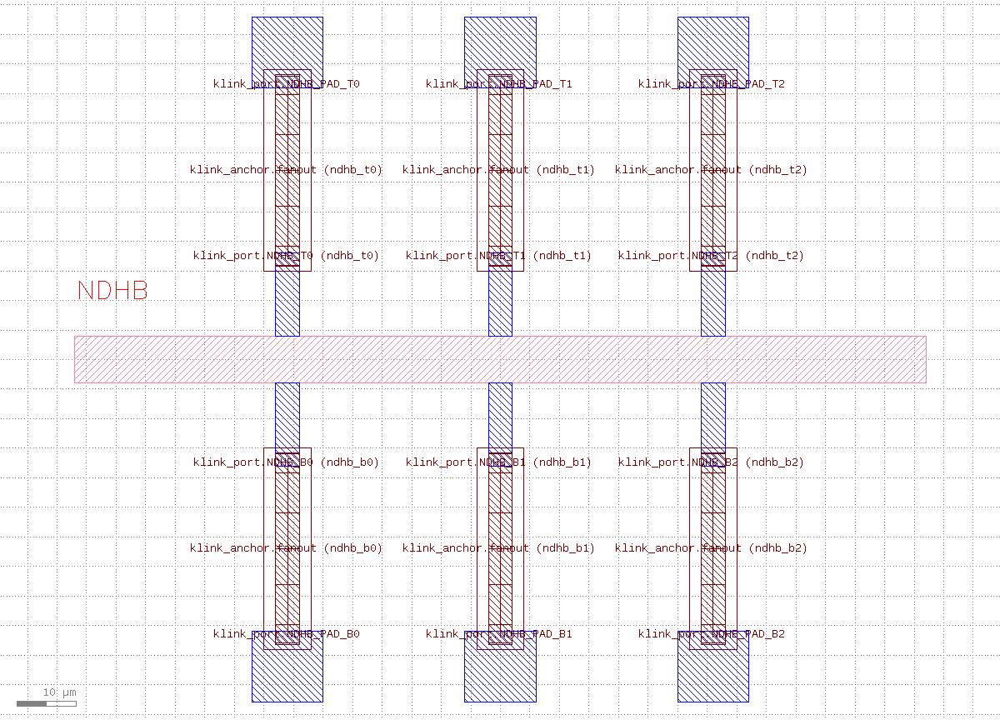
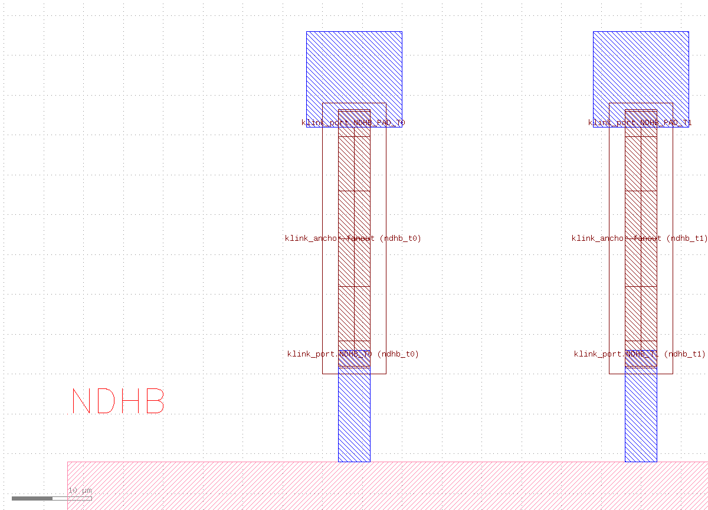
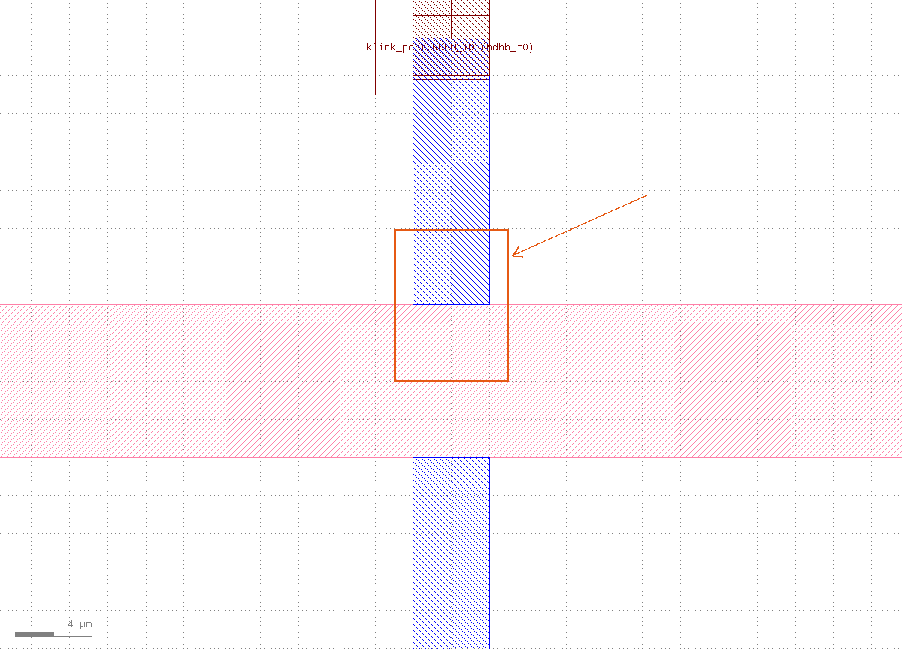

前置条件
- 安装 klink：
pip install klayout-klink（一条命令装好 klink 和它的 Rust 内核，无需第三方科学库）。 - KLayout 正在运行，并已加载 klink 插件（RPC 端口默认
8765）。 - 建一个项目并进入：
klink init nano-demo && cd nano-demo——完整脚本就是python example_template/nanodevice/hallbar.py --live --port <session-port>。仓库 checkout 里等价的是python -m examples_klink.public.demos.nanodevice.hallbar --live --port <session-port>。
hallbar.py 内部一次性完成的批量调用拆成 7 个可观察的阶段，方便讲清每一步在画什么、标什么、为什么。生产环境里你通常还是用一次 shape.insert_many 批量写入（见 CLAUDE.md 的批量 RPC 铁律）——分阶段只是教学手段。1建 cell + 层规划
先建一个disposable cell，再把这个器件要用到的层都 ensure 一遍。Hall bar 是纯离线合成器件，自带层号——不读任何 PDK：
| 层 | 用途 |
|---|---|
1/0 | 器件层（mesa / 导电沟道） |
10/0 | 金属层（欧姆接触 + 探针 pad） |
6/0 | 标签层 |
12/0 | 路由层（fanout 走线，路由后写入） |
999/99 | klink 保留的 Port 标记层 |
999/1 | klink 保留的 Anchor 标记层 |
from klink import KLinkClient
with KLinkClient(port=PORT).connect() as c:
cell = c.cell_create("NANODEVICE_HALLBAR_TEST")["cell"]
device_li = c.layer_ensure(1, 0, name="NANODEVICE_DEVICE")["layer_index"]
metal_li = c.layer_ensure(10, 0, name="NANODEVICE_METAL")["layer_index"]
label_li = c.layer_ensure(6, 0, name="NANODEVICE_LABEL")["layer_index"]
route_li = c.layer_ensure(12, 0, name="KLINK_ROUTES")["layer_index"]view.zoom_box 定位到器件将要占据的区域，此时还没有任何形状）。2画 mesa / 沟道
mesa 是一条居中的矩形导电沟道，尺寸由 HallBarSpec 的 bar_length_um / bar_width_um 决定（默认 144 × 8 µm）。完整坐标算术见 example_template/nanodevice/hallbar.py；这里只展示写入调用：
c.shape_insert_boxes(cell, layer_index=device_li, boxes_um=[mesa_bbox_um])
1/0 层）。3画欧姆接触
沿 mesa 上下边各伸出 3 个窄接触条（本例 contact_count=6），接触条的一端正好落在 mesa 边缘上——这是后面 Port 出线的起点。
c.shape_insert_boxes(cell, layer_index=metal_li, boxes_um=contact_bboxes_um)
10/0 层），从 mesa 边缘向外伸出。4画探针 pad
每个接触对应一个大探针 pad，pad 中心到 mesa 的距离由 pad_gap_um 决定——这就是 CLAUDE.md 里说的"阵列间距 vs 探针间距不同尺度"，pad 和接触之间那段空隙正是第 ⑥ 步要路由的 fanout。
c.shape_insert_boxes(cell, layer_index=metal_li, boxes_um=pad_bboxes_um)
10/0 层），此时与接触之间还没有连线。5标记 Port + Anchor 意图
这是 geometry-first 的关键一步：不直接画连线，而是先标注"这里要出一条线"（Port）和"线要经过这片区域"（Anchor waypoint_region）。每个接触是一个 electrical Port（真实网络），每个 pad 是一个 candidate_sink Port（还没定网络的候选终点）：
c.call("port.mark", {
"cell": cell, "layer": "999/99", "name": "NDHB_T0",
"center_um": [-36, 18], "orientation": 90, "width_um": 4,
"net": "ndhb_t0", "target_layer": "12/0",
})
c.call("anchor.mark", {
"cell": cell, "layer": "999/1", "id": "NDHB_T0_WAYPOINT",
"kind": "waypoint_region", "center_um": [-36, 32],
"width_um": 8, "height_um": 34, "net": "ndhb_t0",
})
6路由扇出
标记完成后，调用 klink 的 tapered-hybrid 路由后端：规划在 Python 客户端完成（可见性图 + Dijkstra，零栅格化），结果用一次批量 RPC 写回 12/0 层：
from klink.routing.backends.geometric.tapered_segments import (
route_tapered_hybrid_many, commit_tapered_hybrid_many,
)
pairs = [{"net": contact["net"], "source": contact, "target": pad,
"route_layer": "12/0"} for contact, pad in zip(contact_ports, pad_ports)]
route_result = route_tapered_hybrid_many(pairs, anchors=anchor_marks)
assert route_result["ok"]
commit_tapered_hybrid_many(c, cell, route_result, route_layer="12/0", clear=True)
7收尾：标签 + 成品全景/细节
最后写入器件名标签，然后分别看整体和一个细节：
c.shape_insert_text(cell, "NDHB", layer_index=label_li,
position_um=[-72, 10], size_um=3.0)
view.zoom_fit）：mesa + 6 接触 + 6 走线 + 6 pad + 标签。

验证，不是截图
和 教程首页说的一样，截图只是给人看的，不是完成依据。这次实际运行的路由报告：
{
"ok": true,
"route_count": 6,
"obstacle_hits": 0,
"sibling_overlaps": 0
}ok=true 且 obstacle_hits / sibling_overlaps 均为 0，说明 6 条 fanout 走线互不重叠、没有撞到任何避障层——这才是"布线做完了"的依据，而不是"看起来连上了"。
下一步
把 example_template/nanodevice/hallbar.py 里的 HallBarSpec 参数改成你自己的尺寸（接触数量、pad 间距、层号），跑一遍 --live 确认路由报告 ok=true，再决定要不要接入 writefield 避障（EBL 场景）或加测 drc.run。更多离线器件背景见核心思路教程 · 离线器件教程，Port/Anchor 的完整字段说明见MCP 参考。